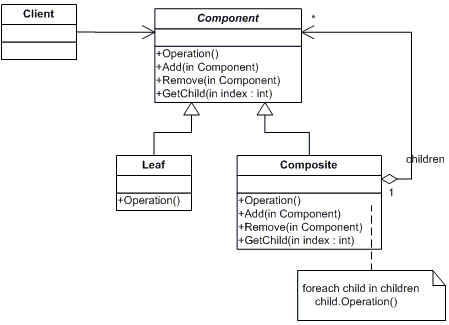
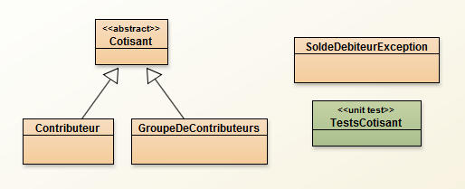
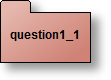
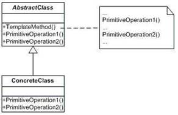
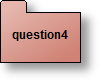
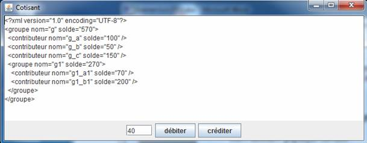
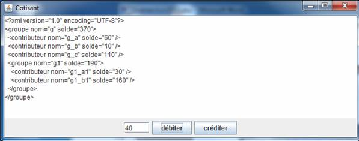
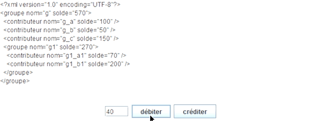

Le patron Composite
Le patron Composite
Préambule: le patron Composite en UML

La structuration et la gestion de cotisants utilisent le patron
Composite. Un contributeur est un cotisant, celui-ci possède les
méthodes de débit et de crédit. Un groupe de contributeurs possède les
mêmes méthodes de débit et crédit qui opèrent sur tous les
contributeurs de ce groupe.
Le composite ci-dessous reflète la gestion des cotisants,
l’architecture retenue des classes pour cette question est la suivante
(en notation BlueJ/UML) :

La classe abstraite Cotisant contient les méthodes suivantes :
public abstract class Cotisant {
protected String nom;
protected Cotisant parent;
public Cotisant(String nom){this(nom,null);}
public Cotisant(String nom,Cotisant parent){this.nom=nom;this.parent=parent;}
public abstract void debit(int somme) throws SoldeDebiteurException;
public abstract void credit(int somme);
public abstract int solde();
public abstract int nombreDeCotisants();
public String nom(){return nom;}
public boolean equals(Object o){return nom.equals(((Cotisant)o).nom);}
public void setParent(Cotisant parent){this.parent=parent;}
public Cotisant getParent(){return parent;}
public abstract <T> T accepter(Visiteur<T> visiteur);
}
- La somme en paramètre des méthodes credit et debit ne peut-être que positive ou nulle, une exception de type RuntimeException doit être levée si celle-ci est négative.
- Si un contributeur ne peut être débité de la somme souhaitée, une exception de type SoldeDebiteurException doit être levée.
Ci-dessous un extrait de la classe de tests unitaires.
try{
Cotisant c = new Contributeur("a",-100);
fail("la somme allouée lors de la création ne peut être négative ???");
}catch(Exception e){
}
Contributeur c = new Contributeur("a",100);
assertTrue(" solde erroné ??? ", c.solde()==100);
final int val = 30;
try{
c.debit(val);
}catch(Exception e){
fail(" aucune exception n'est attendue ici !");
}
assertTrue(" débit inopérant ??? ", c.solde()==100-val);
c.credit(val);
assertTrue(" crédit inopérant??? ", c.solde()==100);
try{
c.debit(300);
fail("SoldeDebiteurException est attendue");
}catch(Exception e){
assertTrue(" SoldeDebiteurException est attendue ???", e instanceof SoldeDebiteurException);
}
GroupeDeContributeurs g = new GroupeDeContributeurs("g");
g.ajouter(new Contributeur("a",100));
g.ajouter(new Contributeur("b",50));
g.ajouter(new Contributeur("c",150));
assertEquals(" nombre de Contributeurs ??? ", 3, g.nombreDeCotisants());
assertEquals(" solde erroné ??? ", 300, g.solde());
assertEquals(" solde erroné ??? ", 30, val);
try{
g.debit(10);
}catch(Exception e){ fail();}
assertEquals(" débit inopérant ??? ", 300-(g.nombreDeCotisants()*10), g.solde());
assertEquals(" solde erroné ??? ", 270, g.solde());
try{
g.debit(60);
fail("SoldeDebiteurException est attendue");
}catch(Exception e){
assertTrue(" SoldeDebiteurException est attendue ???", e instanceof SoldeDebiteurException);
}
assertEquals(" solde erroné ??? ", 210, g.solde());
// ici le solde du groupe (g) est de 210, ce qui est une erreur de débit d’un groupe,
// le contributeur (a) a été débité de 60
// et l’opération a échouée pour (b)!
// une transaction lors d’un débit sera demandée en question3
g = new GroupeDeContributeurs("g");
g.ajouter(new Contributeur("g_a",100));
g.ajouter(new Contributeur("g_b",200));
g.ajouter(new Contributeur("g_c",300));
GroupeDeContributeurs g1 = new GroupeDeContributeurs("g1");
g1.ajouter(new Contributeur("g1_a1",100));
g1.ajouter(new Contributeur("g1_b1",200));
g.ajouter(g1);
Iterator<Cotisant> it = g.iterator();
assertTrue( it.next() instanceof Contributeur);
assertTrue( it.next() instanceof Contributeur);
assertTrue( it.next() instanceof Contributeur);
assertTrue( it.next() instanceof GroupeDeContributeurs);
assertTrue( it.next() instanceof Contributeur);
assertTrue( it.next() instanceof Contributeur);
try{
it.next();
}catch(Exception ex){
assertTrue( ex instanceof NoSuchElementException);
}

La classe Contributeur
Ecrire une implémentation complète de la classe Contributeur.
 Introduction suite
Introduction suite
Ecrire une implémentation complète de la classe GroupeDeContributeurs. La méthode iterator est fournie.
Notez que le débit d’un groupe de contributeurs à cette question
n’est pas correctement implémenté, la notion de transaction,
d'atomicité pour cette opération, indispensable, vous sera demandée en question 3.
 Le patron Visiteur
Le patron Visiteur
Le patron visiteur permet de parcourir une structure composite et
d’exécuter une opération particulière en fonction du nœud visité.
A cette question trois visiteurs sont demandés:
- Le visiteur DebitMaximal permet d’obtenir la valeur maximale que l’on peut débiter d’un cotisant (un contributeur isolé ou un groupe de contributeurs).
- Le visiteur SansDoublon vérifie qu'il n'y a pas deux contributeurs ou groupe au même nom.
- Le visiteur CompositeValide permet de valider une instance du composite.
- Le visiteur VisiteurToXML est fourni et engendre un arbre XML.
public abstract interface Visiteur<T> {
public abstract T visite(Contributeur c);
public abstract T visite(GroupeDeContributeurs g);
}
Les visiteurs CompositeValide et SansDoublon
Ecrire une implémentation complète de la classe CompositeValide.
Le solde de chaque contributeur doit être supérieur ou égal à un nombre
transmis en paramètre, il n’existe pas de groupe n’ayant pas de
contributeurs
et le composite n'est pas cyclique, comme le montre par exemple cette séquence
GroupeDeContributeurs g = new GroupeDeContributeurs("g");
g.ajouter(new Contributeur("g_a",100));
GroupeDeContributeurs g1 = new GroupeDeContributeurs("g1");
g.ajouter(g1);
g1.ajouter(new Contributeur("g_a",100));
g1.ajouter(g); // <-- un cycle ici !, détecté par CompositeValide, cf. la classe de tests unitaires dédiée
et le composite n'est pas cyclique, comme le montre par exemple cette séquence
GroupeDeContributeurs g = new GroupeDeContributeurs("g");
g.ajouter(new Contributeur("g_a",100));
GroupeDeContributeurs g1 = new GroupeDeContributeurs("g1");
g.ajouter(g1);
g1.ajouter(new Contributeur("g_a",100));
g1.ajouter(g); // <-- un cycle ici !, détecté par CompositeValide, cf. la classe de tests unitaires dédiée
La classe SansDoublon vérifie que les noms des groupes et des contributeurs sont différents.
 Le visiteur DebitMaximal
Le visiteur DebitMaximal
Ecrire une implémentation complète de la classe DebitMaximal. Soit la valeur maximale d'un débit sans levée de l'exception SoldeDebiteurException
Notez que ce visiteur représente une « solution » à l’erreur de débit
sur un groupe de contributeurs mentionnée en question 1. Avant chaque
opération de débit l’utilisateur doit (devrait) vérifier la valeur de
débit maximale possible à l'aide de ce visiteur (cf. la méthode main
ci-dessous), la notion de transaction pour un débit d'une instance de composite, demandée à la question 3 sera
préférée.
L’exécution de la méthode Main.main(), ci-dessous a permis d'afficher deux arbres XML, cf. ci-dessous
public class Main {
public static void main(String[]
args) throws Exception {
GroupeDeContributeurs g = new GroupeDeContributeurs("g");
g.ajouter(new Contributeur("g_a",100));
g.ajouter(new Contributeur("g_b",200));
g.ajouter(new Contributeur("g_c",300));
GroupeDeContributeurs g1 = new GroupeDeContributeurs("g1");
g1.ajouter(new Contributeur("g1_a1",100));
g1.ajouter(new Contributeur("g1_b1",200));
g.ajouter(g1);
if(g.accepter(new CompositeValide())){
System.out.println(Main.arbreXML(g));
if(g.accepter(new DebitMaximal())>= 50){
g.debit(50);
System.out.println(Main.arbreXML(g));
}
}else{
System.out.println("Composite invalide");
}
}
public static String arbreXML(Cotisant c) throws Exception{
ByteArrayOutputStream baos = null;
String result = new String();
Element racine = c.accepter(new VisiteurToXML());
Document document = new Document(racine);
XMLOutputter out = new XMLOutputter(Format.getPrettyFormat());
try{
baos = new ByteArrayOutputStream();
out.output(document, baos);
result = baos.toString();
}finally{
baos.close();
}
return result;
}
}
La sortie sur la console résultant de l'exécution de la méthode Main.main :
<?xml version="1.0" encoding="UTF-8"?>
<groupe nom="g" solde="900">
<contributeur nom="g_a" solde="100" />
<contributeur nom="g_b" solde="200" />
<contributeur nom="g_c" solde="300" />
<groupe nom="g1" solde="300">
<contributeur nom="g1_a1" solde="100" />
<contributeur nom="g1_b1" solde="200" />
</groupe>
</groupe>
<!-- apres un debit de 50 -->
<?xml version="1.0" encoding="UTF-8"?>
<groupe nom="g" solde="650">
<contributeur nom="g_a" solde="50" />
<contributeur nom="g_b" solde="150" />
<contributeur nom="g_c" solde="250" />
<groupe nom="g1" solde="200">
<contributeur nom="g1_a1" solde="50" />
<contributeur nom="g1_b1" solde="150" />
</groupe>
</groupe>
 La classe tests unitaires
La classe tests unitaires
Ecrire une classe probante de tests unitaires des 2
visiteurs CompositeValide et DebitMaximal.
 Le patron Template Method
Le patron Template Method
Préambule: le patron Template Method en UML

L'opération de débit sur un groupe de contributeurs en question 1
engendre dans certains cas une erreur: il suffit que l'un des
contributeurs ne possède pas la somme à débiter pour qu'une exception
soit levée, ainsi les sommes débitées de certains contributeurs ne sont
pas restituées.
L'opération
de débit sur un groupe de contributeurs doit être atomique et effectuée
au sein d'une transaction, la classe abstraite AbstractTransaction reflète cette notion et utilise le patron Template Method.
Les opérations beginTransaction, endTransaction et rollbackTransaction sont laissées à la responsabilité des sous classes.
Les opérations beginTransaction, endTransaction et rollbackTransaction sont laissées à la responsabilité des sous classes.
public abstract class AbstractTransaction{ //
AbstractClass du diagramme UML
protected Cotisant cotisant;
public abstract void beginTransaction(); // Template Method
public abstract void endTransaction();
public abstract void rollbackTransaction();
public AbstractTransaction(Cotisant cotisant){
this.cotisant = cotisant;
}
final public void debit(int somme) throws SoldeDebiteurException{
try{
beginTransaction();
cotisant.debit(somme);
endTransaction();
}catch(SoldeDebiteurException e){
rollbackTransaction();
throw e;
}
}
}
Ci-dessous un extrait de la classe de tests.
GroupeDeContributeurs g = new GroupeDeContributeurs("g");
g.ajouter(new Contributeur("a",100));
g.ajouter(new Contributeur("b",50));
g.ajouter(new Contributeur("c",150));
assertEquals(" nombre de Contributeurs ??? ", 3, g.nombreDeCotisants());
assertTrue(" solde erroné ??? ", g.solde()==300);
int ancienSolde = g.solde();
AbstractTransaction transaction = new TransactionDebit(g);
try{
transaction.debit(60); / <-- soldeDebiteurException levée ! (le contributeur b ne peut contribué...)
fail() ;
}catch(Exception e){}
assertEquals(ancienSolde, g.solde());
Proposer une mise en oeuvre de la transaction, la classe concrète nommée TransactionDebit.
celle-ci utilise un Memento, les transactions pouvant être
imbriquées, le gardien devra gérer une pile de Memento.
Note sur l'usage du patron Memento: un premier visiteur pour la
sauvegarde et un second pour la restitution du composite représentent une solution possible.

Une interface graphique
Soit l’interface graphique suivante, à l’initialisation :

Un débit engendre un nouvel affichage de l'arbre XML, ci-dessous une copie d'écran après un débit de 40.

Une nouvelle tentative de débit n'a aucun effet sur l'affichage, la transaction ayant échouée.
Une IHM au comportement attendue se trouve dans votre répertoire : tp_commit>java -jar ihm_q4.jar
Ci-dessuus un Gif animé écrit par M. SADOUK Hamza (NFP121 2019)
Une IHM au comportement attendue se trouve dans votre répertoire : tp_commit>java -jar ihm_q4.jar
|  |
Ci-dessuus un Gif animé écrit par M. SADOUK Hamza (NFP121 2019)
Ci-dessous, l’implémentation à compléter de cette interface graphique :
à chaque clic sur l'un des boutons, l'opération associée est effectuée,
et la zone de texte resultat est actualisée.
public class IHM extends JFrame {
private JTextArea resultat = new JTextArea("", 7,60);
private JButton debiter = new JButton("débiter");
private JButton crediter = new JButton("créditer");
private JTextField somme = new JTextField(4);
private GroupeDeContributeurs g;
public IHM() {
this.setTitle("Cotisant");
Container container = this.getContentPane();
somme.setText("40");
container.setLayout(new BorderLayout());
container.add(resultat, BorderLayout.NORTH);
JPanel p = new JPanel(new FlowLayout());
p.add(somme);
p.add(debiter);
p.add(crediter);
container.add(p, BorderLayout.SOUTH);
g = new GroupeDeContributeurs("g");
g.ajouter(new Contributeur("g_a",100));
g.ajouter(new Contributeur("g_b",50));
g.ajouter(new Contributeur("g_c",150));
GroupeDeContributeurs g1 = new GroupeDeContributeurs("g1");
g1.ajouter(new Contributeur("g1_a1",70));
g1.ajouter(new Contributeur("g1_b1",200));
g.ajouter(g1);
try{
resultat.setText(Main.arbreXML(g)); //actualiser();
}catch(Exception e){}
debiter.addActionListener(null/* a completer */);
crediter.addActionListener(null/* a completer */);
this.pack();
this.setVisible(true);
}
public static void main() {
new IHM();
}
}
Compléter l’implémentation de la classe IHM afin de produire le fonctionnement décrit ci-dessus.